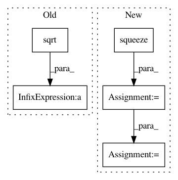

daf01e8fc4b531174cf5fd4478fa587f6923c132,geomstats/special_orthogonal_group.py,SpecialOrthogonalGroup,rotation_vector_from_quaternion,#SpecialOrthogonalGroup#Any#,287
Before Change
cos_half_angle = np.clip(cos_half_angle, -1, 1)
half_angle = np.arccos(cos_half_angle)
rot_vec = np.ones_like(quaternion[:, 1:]) / np.sqrt(3)
mask_not_0 = half_angle != 0
if np.any(mask_not_0):
rot_vec[mask_not_0] = (quaternion[mask_not_0, 1:]
After Change
rot_vec = np.zeros_like(quaternion[:, 1:])
mask_0 = np.isclose(half_angle, 0)
mask_0 = np.squeeze(mask_0, axis=1)
mask_not_0 = ~mask_0
if np.any(mask_not_0):
rot_vec[mask_not_0] = (quaternion[mask_not_0, 1:]
/ np.sin(half_angle[mask_not_0]))
In pattern: SUPERPATTERN
Frequency: 3
Non-data size: 5
Instances
Project Name: geomstats/geomstats
Commit Name: daf01e8fc4b531174cf5fd4478fa587f6923c132
Time: 2018-02-11
Author: ninamio78@gmail.com
File Name: geomstats/special_orthogonal_group.py
Class Name: SpecialOrthogonalGroup
Method Name: rotation_vector_from_quaternion
Project Name: OpenNMT/OpenNMT-py
Commit Name: 31e7f40c3381aac21e8665d0b5706bceddd9de94
Time: 2017-06-25
Author: srush@sum1gpu01.rc.fas.harvard.edu
File Name: onmt/Models.py
Class Name: Decoder
Method Name: forward
Project Name: geomstats/geomstats
Commit Name: daf01e8fc4b531174cf5fd4478fa587f6923c132
Time: 2018-02-11
Author: ninamio78@gmail.com
File Name: geomstats/special_orthogonal_group.py
Class Name: SpecialOrthogonalGroup
Method Name: quaternion_from_rotation_vector